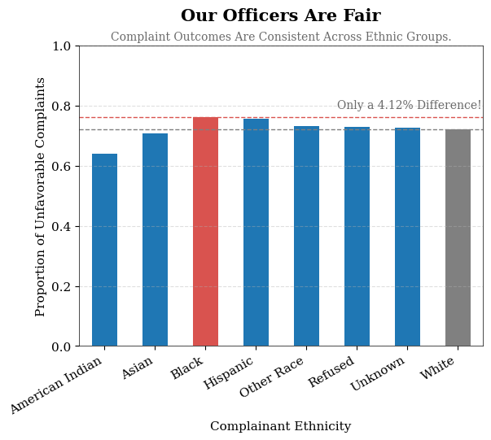
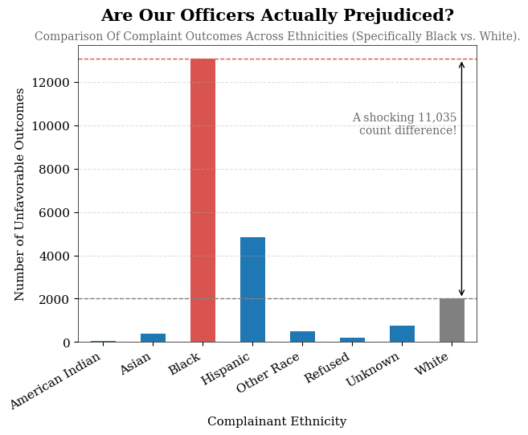

Proposition: Complaint Outcomes Are Fair and Not Influenced by Race
FOR the Proposition

Design Decisions and Rationale:
- Computed Proportion of Unsubstantiated/Exonerated Outcomes (1)
We first grouped complaints by ethnicities and then used the proportion of unsubstantiated and exonerated outcomes to show how there is little difference between ethnic groups, implying fairness. This transformation allows for a more meaningful comparison of outcome rates rather than absolute volume. - Used Reference Lines and Annotated Small Differences to Emphasize Similarity (1.5)
We included horizontal reference lines and a small annotated difference to guide the viewer’s attention to how close the values are across ethnic groups. By highlighting that variation is minimal, the chart encourages the interpretation that outcomes are consistent. These design choices reduce the impact of small differences and reinforce the perception of fairness. - Used Color Highlighting (0.5)
In this plot, we used color contrast to highlight the small numerical gap between two prominent groups, making the plot more visually appealing. Using selective color adds contrast to the chart; if every bar shared the same color, the plot would feel bland.
AGAINST the Proposition

Design Decisions and Rationale:
- Included Raw Counts of Unfavorable Outcomes (1)
For this plot, we first grouped complaints by ethnicities and then chose to use the raw counts to display the sheer difference in numbers between complaints for different ethnic groups. The counts show how certain ethnic groups are given substantially more complaints compared to others, especially complaints that were later deemed unfounded. - Used Color Highlighting and Focused Comparison to Emphasize Disparity (1)
In this plot, we used strong color contrast to highlight Black complainants while muting other groups, directing the viewer’s focus to a specific comparison. By selectively drawing attention and using raw counts, the visualization amplifies perceived disparities and may lead viewers to interpret the data as unequal treatment. - Created Arrow and Annotation to Show Count Difference (0.5)
The long vertical arrow displays the sheer height difference between the red and the gray bars, consequently the large unfavorable outcome count difference between Black and White ethnic groups. The annotation continues to guide the viewer’s thinking, with the word “shocking” catching their attention and utilizing the large number to make them feel there is a huge treatment disparity.
Final Reflection
For both visualizations, to display the comparison between complaint outcomes and fairness amongst race, we manipulated the data by grouping the complaints by complainant ethnicity.
For the supporting plot, we chose to show proportions of complaint outcomes by race instead of raw counts. This is because different racial groups may have very different total numbers of complaints. If we only look at counts, groups with more complaints will naturally have taller bars, which can be misleading. By converting everything into proportions, each group is put on the same scale (out of 100%), making it easier to compare outcomes fairly. The similar bar heights in this plot support the idea that complaint outcomes are not determined by race.
For the opposing plot, we used raw counts of complaints by race. This design highlights the total number of complaints for each group, which can make it seem like some racial groups are treated differently. However, this can be misleading because it does not account for differences in population size or exposure. The higher count for one group does not necessarily mean bias—it could simply mean there were more complaints involving that group overall. We also kept the visual design simple in both plots (same bar style, clear labels, consistent colors) so that the main difference comes from the data representation (proportion vs count), not as much from styling choices. This makes the viewer focus on the bars of data, as there is not as many visual distractions, so that the difference in y variable choices is not as obvious.
Reflection (Ethical Implications): Overall, the design process showed us how small choices can strongly affect the message of a visualization. What was straightforward was creating the plots themselves and deciding basic elements like labels and layout. What was more difficult was realizing how easily a graph can become misleading depending on what is shown or hidden. Choosing between counts and proportions felt like a simple technical decision at first, but it actually has a big impact on interpretation. It was surprising to see how the same dataset could support two very different arguments just by changing the y-axis. We now think of “ethical analysis and visualization” as presenting data in a way that is truthful, clear, and does not hide important context. Ethical visualization does not mean removing all persuasion, but it does mean avoiding choices that can unfairly mislead the audience. We think acceptable persuasive choices are those that simplify or clarify the data while still allowing a reasonable viewer to understand the full picture. While there is no perfectly strict boundary between acceptable and misleading, the key idea is intent and transparency: whether the design helps the audience understand the data, or pushes them toward a conclusion without enough context.